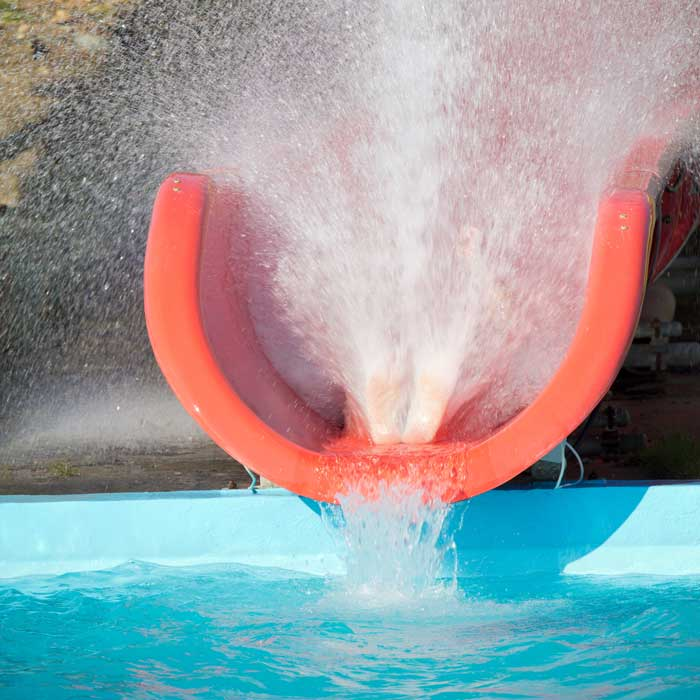
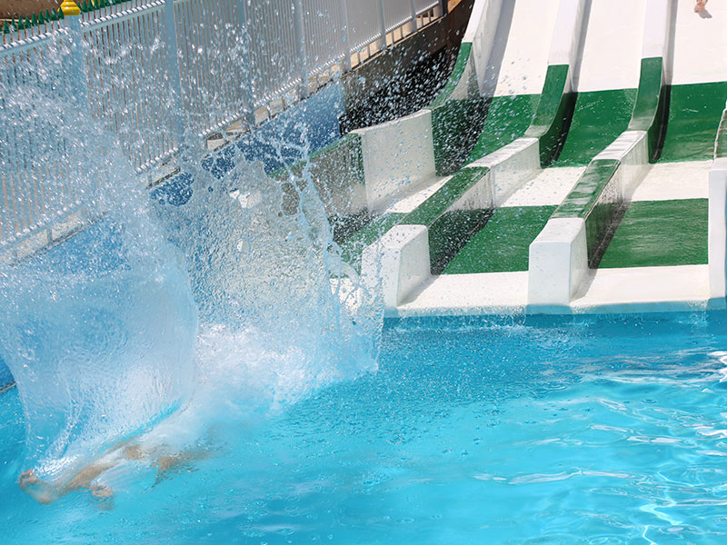
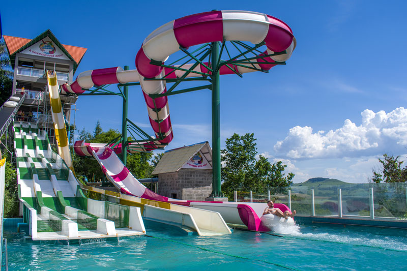
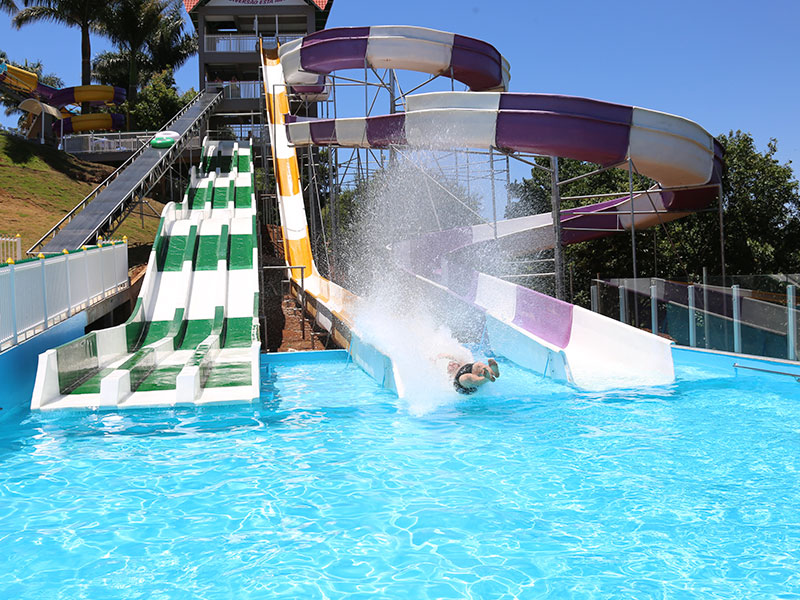

Aqua Parque Itá Thermas
Thermas
O Aqua Parque Itá Thermas é o destino certo para quem procura diversão, bem estar e muita adrenalina, localizado no oeste catarinense na cidade de Itá, a 43 km de Concórdia e 60 km de Chapecó. O Aqua Parque Itá Thermas é o mais novo complexo turístico da cidade, e oferece aos seus visitantes uma estrutura completa, equipe de monitores e guarda-vidas treinados, 12 piscinas para crianças e adultos com água quente (32°C), bar molhado, restaurante, hamburgueria e pastelaria, oferecendo o melhor da gastronomia.
Toboágua

Surfline

Tobobóia

Kamikaze

Link para mais informações do Aqua Parque: Aqua Parque Itá Thermas